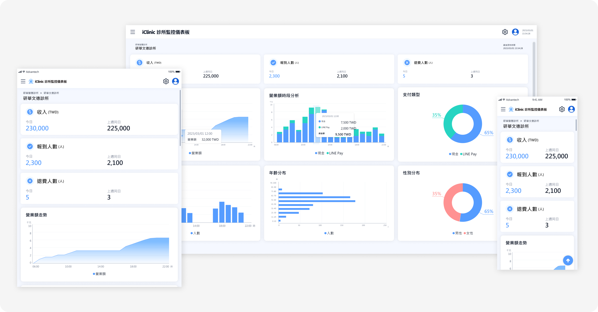

iClinic Kiosk 研華智慧診所解決方案
UI/UX Design
Role
UI/UX Design
Usability Test
Prototyping
Tool/Method
Figma
Timeline
2022 Nov. - 2023 Aug.
專案簡介
iClinic Kiosk是由研華智慧醫療所推出的一套結合地端自助報到機與雲端管理平台解決方案。整體方案涵蓋Kiosk設備端與雲端iCC管理平台兩大部分，協助診所有效解決人力不足、帳務管理困難、設備維運不易等問題，以提升病患就診體驗，優化診所營運流程。
▲ iClinic Kiosk 產品概念圖
專案背景
1. 產品目標與定位
聚焦中小型診所數位轉型需求，提升營運效率與病患體驗，打造可擴充、模組化的智慧診所管理平台，逐步切入基層醫療場域的智慧醫療市場。
2. 技術與產業特點
結合IoT設備與雲端平台，導入模組化設計與遠端設備管理機制，並因應健保HIS系統的多樣性，確保高度相容性與可擴展性。
3. 產業現況痛點
😣診所櫃檯人力不足：
一間診所常僅配置1-2名櫃檯人員，需同時處理掛號、繳費、行政與診療協助等多項任務，尖峰時段容易出現排隊壅塞。
🧮缺乏系統化帳務流程：
多數診所仍以紙本手動對帳，導致帳務流程缺乏一致性，易產生錯誤與落差。
💰帳務透明度不足：
業主普遍對櫃檯帳務管理的效率與安全性有所疑慮，難以即時掌握營收狀況。
👀櫃檯人員數位熟悉度低：
多數櫃檯人員年齡層為35-50歲，對新科技接受度不一，須設計出直覺易懂的操作流程，降低學習曲線。
💊診所需求差異大：
診所業務繁雜，因應不同診所別會有不同的健保減免辦法、其他自費項目等，導致功能需求不一，需具備模組化設計以因應不同情境。
設計策略
1. 透過PM訪談診所櫃檯與營運人員，盤點日常帳務操作流程與實際痛點。
▲ 診所櫃檯人員的一日帳務管理流程(CJM)
2. 借鏡既有產品情境
參考POS機對帳系統、ATM操作介面與CMS系統等既有產品類型，結合診所工作場景與機台使用邏輯，建構出合適的UI介面。
3. 設計決策
根據產業背景現況與產品目標，發展出以下幾個設計決策與相應的功能規劃：帳務系統化、提升帳務透明度、降低操作門檻、功能模組化設計。

▲ 由痛點轉換為設計決策
4. 透過邏輯圖與UI flow，將涉及實體機台與軟體介面的流程視覺化展開，輔助產品團隊對焦討論。

▲ 邏輯圖與UI flow輔助設計討論(以卡鈔異常事件為例)
功能展示
設計重點涵蓋兩大系統：Kiosk後台管理系統與iCC雲端管理平台。
(一) Kiosk 後台管理系統
1. 模組化功能設計
為解決診所間業務流程差異大的問題，功能設計採模組化，讓 RD 可針對不同診所的需求組合功能模組，也保留未來功能擴充與維運的彈性。
2. 線性引導流程（Wizard）
預機台現金管理的情境與 ATM 提款操作相似，因此在參考 ATM 存提款與 POS 對帳流程情境後，設計出 Wizard 操作模式，使用者無法任意跳出流程，專注完成當下任務。搭配圖示提示，強化與機台操作之間的連結。頁面資訊排序也經多次討論與測試，精簡至最必要的資訊與適當的資訊層級分佈。

▲ Kiosk後台操作介面展示（以關帳流程為例）
(二) iCC 雲端管理平台
1. 營收狀況監測 Dashboard
機台會即時更新營業資訊至 Server，線上平台除了提供基本報表，也整合成一頁式 Dashboard，幫助診所經營者跨時間與空間即時掌握營運狀況。
▲ 診所監測總覽、營業額報表、收支明細報表、帳務詳情
2. 遠端設備部署與維運
HIS系統廠商工程師可透過平台統一部署設備、遠端監控設備健康狀況與Log紀錄，達到預警與主動維運的目的，減少突發停機狀況。

▲ 設備管理功能頁面
3. RWD 響應式設計
為了因應不同角色使用需求（經營者、工程師、診所人員），透過響應式網頁設計以提升行動工作效率。
▲ RWD響應式設計
設計驗證
1. 內部A/B測試驗證流程效率
在資源有限情況下招募內部人員進行Prototype測試，針對關鍵操作流程進行比較，挑選效率最佳方案以節省開發成本。
2. 線下機台實機操作測試
UI Mockup完成後，多次實地測試按鈕大小、畫面導引與機台操作的一致性，確保線上與實體操作流程銜接順暢，不產生使用斷點。
▲ 易用性測試：情境任務設計&任務記錄表
▲ 易用性測試後，針對畫面進行問題標注與分類
▲ 機台測試畫面
結語與反思
1. 線下流程與線上系統的整合挑戰
設計需深入了解實體機台的操作邏輯與限制，透過實際場域測試才能真正掌握使用者行為與介面間的銜接狀況。
2. 模組化架構提升產品彈性
對於診所這類業務多元、流程各異的場域，模組化UI與系統設計能有效支援後續功能擴充與場景客製化。
3. 設計與PM/RD深度協作的重要性
與產品團隊反覆討論診所人員的使用情境與工作內容，並共同釐清功能優先順序及模組邊界。當流程發散或有多種解法時，我會主動整理參考案例與流程草圖，協助 PM 聚焦討論方向；在系統邏輯與畫面架構初步擬定後，透過流程邏輯圖與 Wireframe 與前後端工程師對焦細節，協助 RD 更快進入實作階段。